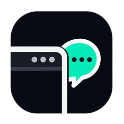
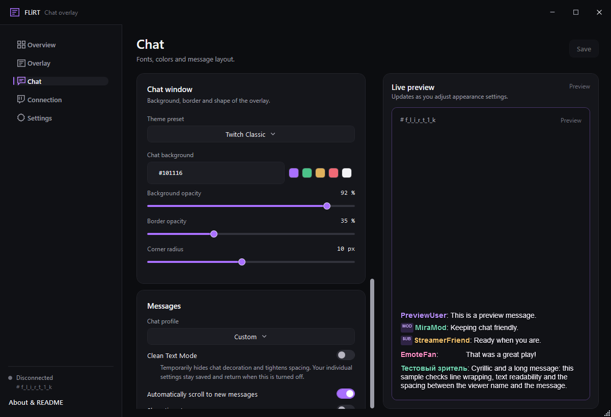
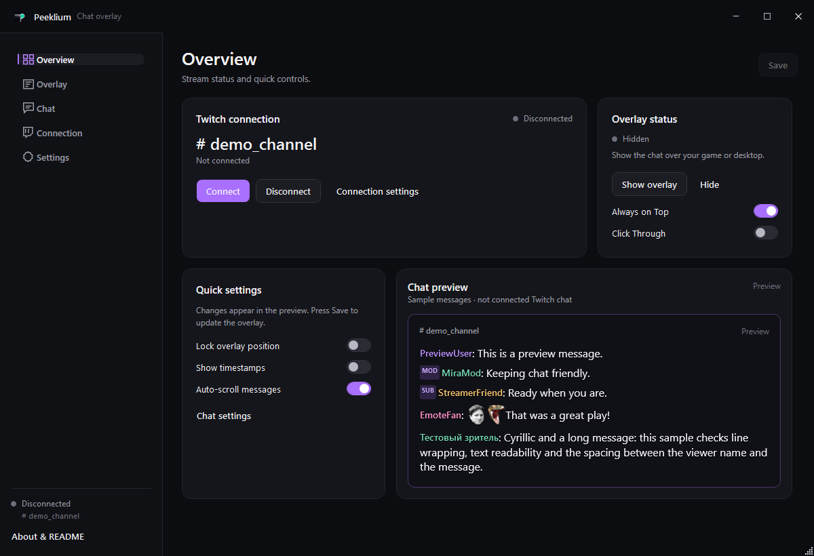

01 Overlay
Put the window where you want it
Pick one of nine positions, resize it or drag the window by hand. Always on Top keeps chat above the game, and Click Through passes clicks through the overlay.

PeekliumPeeklium pins chat over your game in windowed mode. Place the overlay, tune its look and stay with the stream.

Move the window and style the chat without changing how you play.
Pick one of nine positions, resize it or drag the window by hand. Always on Top keeps chat above the game, and Click Through passes clicks through the overlay.
Choose a preset and adjust font, color, opacity and spacing. The preview updates while you edit.
Quick Connect joins a public chat with no account. To sign in with Twitch, authorize in your browser.
Show chat, toggle Click Through, open settings or lock the window with global shortcuts.
The main page, overlay appearance and Twitch connection.

Self-contained build for Windows x64.
Download PeekliumCompatibility, connection and overlay behavior.
Windows 10 and 11, x64. The build is self-contained: you do not need to install the .NET Runtime separately.
No. Quick Connect joins a public chat without an account or Client ID. To connect with an account, sign in with Twitch from the app.
No. The app shows chat as read-only and never sends messages.
The overlay works in Borderless Windowed or windowed mode. Exclusive fullscreen in some games can hide third-party windows.